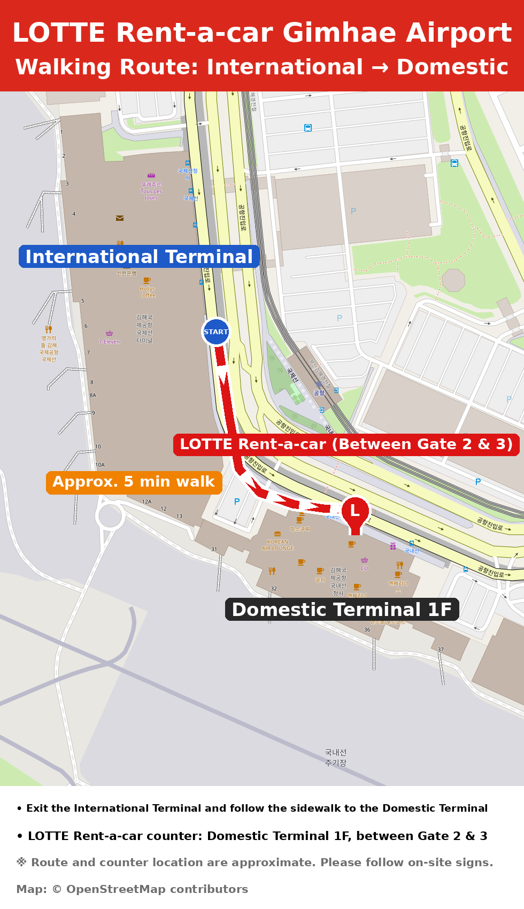

1Pick-up Location
Domestic Terminal 1F (Arrivals)
Our counter is located between Gate 2 and Gate 3.
About a 5-minute walk from the International Terminal.
2What to Bring (Originals only)
- Passport – for identification
- A valid International Driving Permit (IDP) – please check the expiry date and vehicle category:
- Category B: vehicles with up to 8 passenger seats
- Category D: vehicles with more than 8 passenger seats
3Before You Arrive
Please tell us your arrival flight number (e.g., KE1234) by replying to our email.
⚡ FAST PICK-UP SERVICE
Send us scanned copies of your Passport & International Driving Permit in advance for a quick and easy rental!
Questions? Contact the Gimhae Airport Office
534046@lotte.net